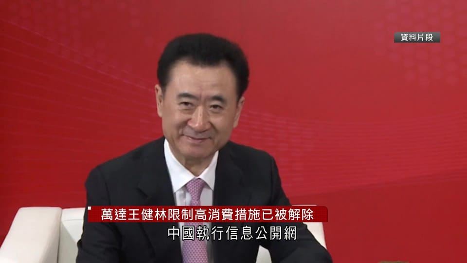

世界苦茶09月29日新闻 | 33条 | 王健林被限制高消費的撲朔迷離

王健林被限制高消費的撲朔迷離 | 比亞迪國際銷量將突破20% | 美國接連發生兩起槍擊案 | 摩爾多瓦親歐盟政黨贏得選舉
每日三个新闻解读
苦茶数据
美元兑人民币：7.12（昨日7.14，前日7.13）
美元兑日元：148.62（昨日149.51，前日149.66）
上证指数：3862（昨日3828，前日3847）
标普500指数：休市（昨日6643，前日6604）
比特币：112212（昨日109789，前日109461）
布伦特原油：69.10（昨日70.13，前日69.52）
中国新闻
• 中国国庆中秋长假将至 中纪委要求不得违规收送月饼。
中国国庆和中秋长假将至，中共中央纪委办公厅发布通知，要求各级纪检监察机关紧盯节日期间易发问题，纠治违规收送月饼等礼品的行为。中纪委星期六发布的《关于国庆中秋期间严格落实中央八项规定精神、从严纠治“四风”的通知》，要求坚决防止“四风”反弹回潮。《通知》要求紧盯节日期间易发和多发问题，坚决纠治一系列行为，包括违规收送月饼、蟹卡蟹券、烟酒茶等礼品和礼金；在居民小区、内部食堂、私人会所等场所违规吃喝；违规发放津贴补贴或福利；违规操办婚丧喜庆事宜等。
• 朝外长访华或为中国高层赴平壤阅兵铺路。
朝鲜外交部长崔善姬应中国外长王毅邀请访华四天，是她就任外长以来首次单独访问中国，也是本月第二度访问北京。学者研判，崔善姬此行主要目的之一，是为中国高级别人士10月上旬出席朝鲜劳动党建党80周年阅兵式铺路，但中国国家主席习近平应不会亲赴平壤。据朝鲜中央通讯社星期天发布消息，崔善姬星期六在平壤乘专机启程赴华。她此前曾于9月2日至4日随金正恩乘专列访问北京，出席中国“九三”阅兵。据中国外交部官网消息，王毅星期天与崔善姬举行会谈，指出中朝是山水相连的友好邻邦，两国外长的职责就是加强战略沟通。王毅强调，北京愿同平壤在国际和地区事务中加强协调配合，反对一切形式的霸权主义，维护双方共同利益和国际公平正义。
• 世界最高大桥在中国开通。
中国正式向公众开放了世界上海拔最高的大桥。花江大峡谷大桥高出贵州省峡谷 625 米。官方称，它将峡谷两侧的旅行时间从两小时缩短至两分钟。今年 8 月初，一个测试小组将 96 辆卡车开到指定地点，测试大桥的结构完整性。目前，该桥已创下世界最高桥梁和山区最大跨度桥梁的纪录。
• 中国无人机两栖攻击舰有望开始海试。
中国的无人机两栖攻击舰 "四川号 "预计将开始海试 新发布的 076 型舰图片引起了人们对该舰已准备好进行新阶段测试的猜测。社交媒体上流传的图片显示，076 型舰的电动发射弹射器上的盖子已被拆除，而且显然已安装了雷达系统，这引起了人们对该舰已准备好进行测试的猜测。四川号因其电磁弹射器发射系统而被视为中国人民解放军海军无人机作战的关键资产，并经常被描述为世界上第一艘无人机航母。在任何涉及台湾的军事冲突中，两栖攻击舰都可能扮演重要角色，而 076 型舰艇将能够扩大解放军打击群的行动范围。北京视台湾为中国的一部分。
• 从突尼斯到乍得，中医如何扩大中国在非洲的软实力。
中医如何扩大中国在非洲的软实力--从突尼斯到乍得 新的中心正在培养非洲人的中医和针灸技能，让每一位毕业生都成为中医的 "大使"。该中心位于蒙吉-斯利姆大学医院，距离首都突尼斯仅18公里，于上周五开业，是两国在二月访问期间达成一系列卫生合作协议的直接成果。几十年来，北京一直向非洲派遣医疗队，推广中医药，帮助建立友好关系和文化纽带。中国在南非，津巴布韦，塞拉利昂，毛里求斯和摩洛哥等非洲国家设立了越来越多的医疗机构，这是中国利用卫生外交和文化交流在非洲大陆扩大软实力战略的一部分。9 月 20 日，一个类似的中医培训机构也在乍得的乍中友好医院揭幕。江西省副省长石柯出席了此次活动。
• 中国军队工程师在实验室进行首次三枚核弹攻击实验。
中国军队工程师首次在实验室进行三连发核弹攻击实验 解放军科学家试用尖端军事技术，旨在通过多管齐下的攻击彻底摧毁敌方目标 这一场景凸显了现代战争中一个长期存在的挑战：即使是最强大的常规武器也可能无法摧毁深埋地下的坚固目标。但如果使用的是核武器--不是一枚，而是多枚弹头快速连续攻击同一地点的协调序列呢？这项研究由位于南京的中国人民解放军陆军工程大学副教授徐晓辉领导，详细介绍了世界上首个能够模拟地下深处多点、高当量核爆炸效果的实验室系统的开发情况--具体来说，就是三个核弹头在同一目标上连续引爆所产生的影响。
• 节假日前夕首批大闸蟹登陆中国市场，市场情绪低落。
消费低迷，"黄金周 "前夕中国大闸蟹价格下降 曾经一蟹抵一金的礼券价格持续走低 业内人士预计，由于产量增加，送礼需求萎缩以及家庭消费疲软，大闸蟹价格将进一步下跌。今年的国庆假期与中秋节重叠，形成了一个为期八天的 "超级黄金周"，被视为国内需求的试金石--涵盖了从零售额，票房收入到旅游，餐饮和娱乐消费的方方面面。上周，第一批大闸蟹在全国各地上市，但在距离超级黄金周不到两周的时间里，市场情绪低迷。上海嘉定区政府在网上发布的一份报告显示，与去年同期相比，大闸蟹的零售价格每公斤下降了约20元--据媒体报道，当时的价格在每公斤100元至160元之间--随着交货速度加快。
印太新闻
• 两名中国大陆游客使用假台湾驾照在日本被捕。
日本警视厅交通搜查课发布消息称，两名中国大陆游客因使用台湾伪造驾照在日本办理驾驶手续，涉嫌非法制作并使用私人电磁记录，已被警方逮捕。滥用「持有台湾驾照比较容易在日本开车」的制度、为外国游客伪造驾照的生意可能在日本横行。被捕的是住址、职业不详的犯罪嫌疑人高志洲等2人。高志洲的被捕嫌疑是2024年11月向日本汽车联合会申请制作台湾伪造驾照的翻译文件。据悉，犯罪嫌疑人高志洲已在日本驾驶了租赁汽车。据交通搜查课透露，两每人平均否认嫌疑，称「不知道是伪造的驾照」。包括台湾在内的6个国家和地区的驾照被认定与日本驾照标准相当。
科技新闻
• 英伟达黄仁勋：中国在芯片领域比美国落后 "纳秒级。
英伟达公司黄仁勋说，中国在芯片领域 "落后 "美国 "毫微秒" 黄仁勋说，允许美国公司参与全球竞争--包括在中国--将 "最大化 "美国的经济成就和影响力，华盛顿应允许其技术产业参与全球竞争--包括在中国--以 "在全球推广技术"，从而 "最大化美国的经济成就和地缘政治影响力"。黄说，中国 "纳秒级地 "落后于美国，"所以我们必须去竞争"，他强调了中国在芯片制造方面的进步及其制造业的潜力。他指出了中国深厚的人才储备，勤奋的工作文化和各省之间的内部竞争。"他在由科技投资者布拉德-格斯特纳和比尔-格利主持的播客节目BG2上说："这是一个充满活力，创业精神，高科技的现代产业。
经济新闻
• 美国钢铁关税扩大范围，涉720种衍生商品。
美国政府将以钢铁和铝为原材料的商品作为「衍生商品」，纳入征税对象 | 美国川普政府的钢铁和铝关税正在给企业带来超出预料的负担。美国政府将以钢铁和铝为原材料的商品作为「衍生商品」，纳入征税对象，迄今已指定了从建筑机械到食具等约720种商品。对象商品正在分阶段增加，影响正在扩大至所有行业。衍生商品的征税结构很复杂。首先将商品整体分为使用钢铝的部分和其他部分，对钢铝部分的采购价格征收50%的钢铝关税。商品的交易价格中除去钢铝采购价格的部分将征收对等关税等。如果是日本制造的工程机械，对等关税为15%。
• 中国前首富王健林被法院限制高消费。
大连万达集团因下属项目公司的经济纠纷被强制执行1.86亿元，万达集团及其创始人、中国前首富王健林被法院限制高消费。这意味着王健林将不得搭乘飞机、高铁一等座及商务座，不可在星级酒店、夜总会、高尔夫球场等场所进行高消费，也不得购买不动产或高价保险理财产品。
• 中国电动车大王比亚迪预计今年国际销量将突破 20%。
中国电动车大王比亚迪建立出口势头，预计今年海外销量将达到 20% 2024 年，比亚迪在中国大陆以外的销量占其总交付量 426 万辆的比例不到 10%，这家总部位于深圳的汽车制造商预计 2025 年在中国大陆以外的交付量将达到 80 万至 100 万辆，而预计的总销量为 460 万辆。"他在上周的一次媒体吹风会上说："我们估计，今年我们的海外销售比例将达到 20%。"未来几年，国际交付将做出更大贡献"。2024年，比亚迪在大陆以外的销量占其426万辆交付总量的比例不到10%。李书福说，比亚迪自己的汽车运输船队为出口激增提供了支持。这家汽车制造商目前拥有八艘大型船舶，其中最大的一艘可运输 9。
• 中国的工业革命将像制造汽车一样制造火箭和卫星。
太空拉动系统：借鉴汽车行业的经验，中国航空航天领域采用了一种新的大规模生产运营模式。这种新兴系统旨在大规模生产航天系统，不仅速度快，而且质量稳定、成本更低，灵活性更高。研究人员表示，在新技术的推动下，全球航天活动预计将呈指数级增长，到 2045 年，轨道发射的有效载荷将达到每年 17 万吨，掌握可扩展航天生产的国家将主导未来。传统的航天生产是一个 "推 "的系统：根据预测和时间表生产部件，往往导致不匹配、延误和库存堆积。新的 "拉动 "模式颠覆了这一逻辑。总装不再通过流水线推送零部件，而是仅在需要时才从上游供应商处拉取零部件，而且严格按照要求的数量拉取。
• 沃尔玛计划如何让美国最大的私营企业员工为人工智能驱动的未来做好准备。
沃尔玛计划如何让美国最大的私营企业劳动力为人工智能驱动的未来做好准备 沃尔玛计划如何让美国最大的私营企业劳动力为人工智能驱动的未来做好准备 阿肯色州本顿维尔 - 随着人工智能和人口结构的变化重塑了美国的就业市场，美国最大的私营企业雇主正试图确定其工人和更广泛的劳动力在未来可能需要的技能。沃尔玛周四接待了来自其他公司的 300 多名职场专家和代表，他们都参与了 "技能优先劳动力计划"。零售商已经推出了自己的员工培训和认证计划，以满足沃尔玛对卡车司机和维修技术人员的需求，美国公司表示，随着经验丰富的技工退休，这两个职位的招聘速度不够快。沃尔玛表示。
• 中国希望通过 24 亿人次的 "黄金周 "旅行促进经济发展。
中国希望通过 24 亿人次的 "黄金周 "旅行拉动经济增长 当局预计，即将到来的长假期间，国内外旅游人数将比去年有所增加。"黄金周 "假期将从周三中国国庆节开始，持续到下一周的中秋节。为期八天的假期是中国最重要的旅游时段之一，预计旅游预订量的增加可能会为消费经济提供急需的推动力。自 2023 年农历新年以来，中国的 "跨区域 "旅游统计包括公路交通和公共交通的使用。去年的七天长假中，黄金周期间中国境内出行人数超过 20 亿人次。"自驾游是公众出行的主要方式。我们预计这个假期将有 18.7 亿人次驾车出行，占出行总人数的近 80%，"李克强说。李克强说，预计周三将是最繁忙的一天，出行人数将超过。
• 德国总理即将主办汽车峰会 应对产业危机。
德国总理即将主办汽车峰会 应对产业危机 2025年9月28日面对德国汽车行业深陷危机，联邦总理梅尔茨计划于10月9日主办一场汽车峰会。预计多位部长、拥有汽车产业的联邦州州长、主要制造商和供应商以及员工代表都将出席此次峰会。广告 德新社从政府消息人士处了解到联邦总理梅尔茨即将主办汽车峰会的消息。梅尔茨在9月初的一次联盟委员会会议后宣布了举办此次峰会的消息。德国汽车行业正面临销量下滑、来自中国的竞争以及向电动汽车转型的困境。此外，还有与美国的关税争端。许多公司正在实施紧缩措施，减少工作岗位或班次。无论是大众，梅赛德斯-奔驰，宝马，保时捷还是奥迪，最近都报告了利润下滑。
俄乌战争
• 万斯：现在显然是俄罗斯 "认真 "谈论和平的时候了。
美国副总统JD Vance周日将唐纳德-特朗普总统最近对俄乌战争态度的转变归因于人员伤亡和对俄罗斯经济的影响。"俄罗斯经济一塌糊涂。俄罗斯人在战场上没有获得什么好处。万斯在接受福克斯新闻的玛莎-麦克卡勒姆在 "福克斯新闻周日 "节目中的采访时说："现在显然是时候让他们倾听他热情洋溢的恳求，让他们坐到谈判桌前，真正认真地讨论和平问题了。"他补充说："我认为发生变化的是当地的现实，俄罗斯人杀了很多人，损失了很多人。
• 摩尔多瓦亲欧盟政党赢得大选，陷入俄罗斯干预指控泥潭。
摩尔多瓦亲欧盟政党在选举中获胜 因俄罗斯干预而陷入困境 摩尔多瓦总统马亚-桑杜领导的亲欧洲政党在选举中获胜，并在议会中获得多数席位，这被认为对该国未来加入欧盟的道路至关重要。桑杜在周日投票后警告说，"俄罗斯将进行大规模干预"，她说，与乌克兰和罗马尼亚毗邻的摩尔多瓦的未来岌岌可危。在 160 万张选票中，桑杜领导的行动与团结党的得票率为 49.5%，遥遥领先于亲俄的爱国选举集团的不足 25%。投票率超过 52%，高于近年来的水平。反对党主要领导人之一伊戈尔-多东在选举结果出来之前就已宣称获胜，并呼吁周一在议会外举行抗议活动。由于城市地区和国外的计票时间较晚。
• 在欧盟领导人准备前往哥本哈根之际，丹麦禁止无人机飞行。
继上周五在军事基地附近和上周在民用机场发生骚乱后，丹麦将在本周对民用无人机关闭领空。欧洲理事会将于周三在哥本哈根举行会议，讨论防务和乌克兰问题，次日欧洲政治共同体也将在哥本哈根举行会议。"交通部长托马斯-达尼埃尔森在一份声明中说："我们不能接受外国无人机给社会带来不确定性和混乱，就像我们最近所经历的那样。
• 俄罗斯对乌克兰发动12小时大规模空袭。
乌克兰有限的防空力量周日凌晨竭力抵挡俄罗斯的大规模空袭，但据官员称，此轮空袭造成4人死亡，基辅及其郊区的多栋建筑物被摧毁或损坏。乌克兰总统弗拉基米尔•泽连斯基表示，俄罗斯对乌克兰发动的“大规模袭击”持续了12个多小时。他称此轮空袭是“野蛮的”，是“针对普通城市的蓄意、有针对性的恐怖行径”。他表示，俄罗斯发射了近500架攻击无人机和40多枚导弹，其中包括弹道导弹。最新空袭发生之际，由于俄罗斯总统弗拉基米尔•普京要求乌克兰全面投降，基辅与莫斯科方面之间的和平谈判陷入停滞。您已阅读20%，剩余80%包含更多重要信息，订阅以继续探索完整内容，并享受更多专属服务。
• 泽伦斯基称美国军火采购 "巨额交易 "正在进行中。
泽连斯基周六表示，基辅正在就从美国购买武器达成一项 "巨型协议"。据媒体报道，泽连斯基在基辅举行的新闻发布会上说，乌克兰已向美国总统唐纳德-特朗普提供了其军事需求的详细说明，其中包括对远程武器系统的要求。
• 摩尔多瓦在关键选举前夕取缔两个亲俄政党。
摩尔多瓦官员9月27日表示，由于涉嫌非法融资，摩尔多瓦禁止亲克里姆林宫的大摩尔多瓦党参加即将举行的议会选举。一天前，该国中央选举委员会也暂停了摩尔多瓦之心党的活动，该党是亲俄罗斯的爱国集团的四个派别之一，旨在挑战执政的亲欧洲的行动与团结党。摩尔多瓦人将于 9 月 28 日前往投票站参加关键的议会投票，这可能会威胁到爱国行动党的多数地位，并有可能使基希讷乌脱离加入欧盟的道路。中央选举委员会称，在警方，安全和情报官员发现摩尔多瓦心脏党和大摩尔多瓦党使用非法资金的证据后，该委员会决定将这两个政党排除在投票之外。
世界新闻
• 阿拉伯官员称，特朗普的关于加沙停火的“21点计划”将包括在48小时内释放所有人质，并逐步将以色列军队撤出加沙。
官员称，计划非最终版，很可能发生变化。哈马斯官员称，已获悉该计划，但尚未收到斡旋方的正式提议。它将积极负责地研究任何提议。哈马斯9月28日表示，与两名被关押在加沙城的人质失去联系。哈马斯呼吁以色列撤军并停止空袭，以便战斗人员营救人质。以色列军方未予置评，但明确表示没有停止推进的计划。加沙卫生部门称，过去24小时，有至少77人死于以色列袭击。
• 美国航空公司夏洛特航班起落架上发现偷渡者尸体。
美国航空公司夏洛特航班起落架内发现偷渡者尸体 警方称，他们正在调查周日上午在美国航空公司一架刚从欧洲飞抵北卡罗来纳州夏洛特的航班起落架舱内发现的一名偷渡者死亡事件。夏洛特麦克伦堡警方称，维修人员在维修飞机时于周日上午 9 点后不久发现了这具尸体。夏洛特市警察局机场分局的警官当场宣布该人死亡。凶杀案侦探和犯罪现场小组作出回应，梅克伦堡县法医办公室将对尸体进行解剖。美国航空公司发言人在一份简短声明中向 NPR 证实了这一发现，并补充说该航空公司正在 "与执法部门合作进行调查"。关于偷渡者的身份，他们是如何进入飞机的，以及该航班是从欧洲哪个城市起飞的。
• 北卡罗来纳州海滨酒吧枪击案造成 3 人死亡，嫌犯被拘留。
警方称一名枪手周六晚在北卡罗来纳州南港从水上袭击了一家酒吧，将他的船开到一家露天码头酒吧旁并开火，造成三人死亡，五人受伤。奈杰尔-埃奇周六被捕，罪名包括一级谋杀，警方称这是一起有预谋的袭击。嫌犯逃离现场，驾船驶向海岸内水道。
• 密歇根州摩门教教堂发生枪击事件，至少两人死亡，数人受伤。
密歇根州摩门教教堂枪击案造成至少两人死亡，数人受伤 警方称，一名枪手驾车闯入密歇根州一座教堂并开火，目前已造成至少两人死亡，九人受伤。官员说，对位于底特律西北 60 英里的大布兰克镇耶稣基督后期圣徒教会的袭击发生在吸引数百人的周日礼拜期间。警方确认嫌犯是来自密歇根州伯顿附近的 40 岁托马斯-雅各布-桑福德，据称他还放火焚烧了部分建筑，目前火势已得到控制。官员警告说，他们可能会在里面发现更多的受害者。据称枪手已被警方击毙。当局表示，公众没有受到持续威胁。大布兰克镇警察局局长威廉-伦耶告诉记者，当地时间 10:25 左右，"数百 "人正在参加礼拜活动。
• 特朗普关于自闭症的言论引发自闭症患者及其家人的愤怒和希望。
特朗普关于自闭症的言论引发了自闭症患者及其家人的愤怒和希望 一位有一个自闭症儿子的印第安纳州妇女说，唐纳德-特朗普总统毫无根据地声称怀孕期间服用泰诺会导致自闭症，这是对母亲的指责。肯塔基州一名成年后被诊断患有自闭症的妇女认为，特朗普将自闭症描述为 "可怕，恐怖的危机"，是在妖魔化自闭症。马萨诸塞州一名男子的双胞胎儿子患有严重的自闭症，他认为共和党总统的讲话令人充满希望，因为这是政府最高层首次讨论自闭症问题。总统及其政府中的其他人最近关于自闭症的言论在美国引起了共鸣，在自闭症患者及其家人中引发了广泛的意见和感受。一些人对重新关注自闭症表示欢迎。
• 纽约市市长埃里克-亚当斯结束连任竞选活动。
纽约市市长埃里克-亚当斯放弃竞选连任 纽约--纽约市市长埃里克-亚当斯周日结束了他举步维艰的连任竞选活动，承认在经历了一年的丑闻和政治动荡之后，他不再是一个可信的竞争者。在社交媒体上发布的一段视频中，亚当斯自豪地谈到了自己的市长任期。但他说，他现已被驳回的联邦腐败案让选民对他心存戒备，而媒体对他未来的 "不断猜测 "也让他无法筹集到足够的资金来认真竞选。"他说："尽管我们取得了这么多成就，但我无法继续竞选连任。亚当斯没有为其他候选人背书，但他警告说，"阴险势力 "正在利用地方政府 "推进分裂议程"。美联社记者朱莉-沃克报道：纽约市市长埃里克-亚当斯放弃竞选连任。"亚当斯说："相反。
• 英国部长致工党：给饱受批评的基尔-斯塔默更多信任。
利物浦--周日，一年一度的工党大会在利物浦拉开帷幕，一名主要内阁大臣敦促同事们停止对基尔-斯塔默的攻击以及要求蕾切尔-里夫斯打开支出水龙头的要求。斯塔默的盟友、新近上任的工作与养老金大臣帕特-麦克法登在工党大会期间举行的《政治新闻》活动上表示，首相赢得2024年大选 "应该得到更多的赞誉"。斯塔默面临着工党内部对其领导能力的公开抱怨，并要求他的政府改弦更张。这些抱怨是在斯塔默和工党的全国民调仍远低于奈杰尔-法拉奇的英国改革党的情况下出现的。
• 特朗普将与内塔尼亚胡举行关键会谈。
以色列总理本雅明•内塔尼亚胡周一将在华盛顿与唐纳德•特朗普就加沙问题举行关键会谈，美国正在推动一项有望结束持续已近两年的加沙战争的新计划。内塔尼亚胡将在白宫与特朗普举行自后者1月就任总统以来的第四次会晤——使其成为与美国总统见面最频繁的世界领导人——然而以色列官员正准备迎接这场围绕加沙战争的可能十分紧张的讨论。上周在纽约出席联合国会议时，特朗普向阿拉伯和穆斯林国家领导人提交一份旨在结束战争的新的21点计划，要求永久停火，释放所有仍被哈马斯扣押的以色列人质，并在加沙地带部署一支国际稳定部队。一个巴勒斯坦委员会将在一个国际监督机构的监督之下，在过渡时期管治加沙。您已阅读24%。
• 瑞士选民以微弱优势通过电子身份证计划。
瑞士选民以微弱优势通过电子身份证计划 瑞士选民以微弱优势通过了一项自愿性电子身份证计划。计票结果显示，50.4%的投票者表示赞成，49.6%的投票者表示反对。投票结果之接近令人惊讶。民意调查显示，支持数字身份证的比例高达 60%。这是瑞士第二次就数字身份证进行投票。早先的提案于 2021 年被否决，因为人们担心数据会被集中保管，并主要由私营供应商控制。周日的修订提案则将该系统保留在政府手中。数据将只存储在个人用户的智能手机上，数字身份证将是可选的。如果公民愿意，可以继续使用国民身份证，这在瑞士已经是几十年来的标准。为了进一步缓解对隐私的担忧，特定机构在查询某人的信息时。
• 基尔-斯塔默将奈杰尔-法拉奇的移民政策称为 "种族主义"，部长高官发出变革信号。
英国利弗浦--在英国首相基尔-斯塔默将奈杰尔-法拉奇的 "改革英国"政策称为 "种族主义 "政策之际，英国最高内政大臣沙巴娜-马哈茂德表示，英国可能会收紧针对移民的长期定居规则。英国内政大臣表示，她正在研究如何将无限期居留权与申请人对社会的贡献联系起来。周日，斯塔默加大了对法拉奇的攻击力度，他在民意调查中落后法拉奇11个百分点，斯塔默告诉英国广播公司，改革英国自己废除无限期居留的政策是 "种族主义 "和 "不道德的"。
• 阿根廷人在抗议残杀年轻女性的活动中要求伸张正义。
阿根廷人在抗议残杀年轻女性的活动中要求伸张正义 数千人参加了在布宜诺斯艾利斯举行的反杀害妇女抗议活动，要求为在一起震惊阿根廷的罪行中被折磨和杀害的一名女孩和两名年轻女性伸张正义。15 岁的拉拉-古铁雷斯以及 20 岁的莫雷娜-威尔第和布伦达-德尔-卡斯蒂略被残忍杀害的过程在社交媒体上进行了直播。警方认为，这是一个贩毒团伙所为，并将这一罪行作为对其他人的警告进行了直播。据国家安全部长帕特里夏-布尔里奇称，截至周五，警方已逮捕了五名嫌疑人--三男两女，但一名 20 岁的秘鲁男子仍在逃，警方称他是该团伙的头目。据调查人员称，9 月 19 日，受害者被诱骗上一辆面包车，以为是去参加派对。但当局表示。
• 美国公民在被拘留九个月后被塔利班释放。
美国公民被塔利班关押九个月后获释 官员称，经过卡塔尔调解人主导的谈判，一名在阿富汗被塔利班关押九个月的美国公民获释。这名男子名叫阿米尔-阿米里，是今年第五名在阿富汗获释的美国人。他已于周日返回美国。美国国务卿马可-鲁比奥感谢卡塔尔 "不懈的外交努力"，他说这对确保阿米里先生获释至关重要。阿米里先生被拘留的原因尚不清楚。鲁比奥说他被 "错误地拘留"。国务卿补充说，在阿富汗仍有更多的美国公民被 "不公正地拘留"，特朗普政府正在努力确保他们获释。卡塔尔外交部表示已为阿米里先生的获释提供了便利，他在前往美国之前正在前往多哈的途中。消息人士告诉英国广播公司的美国合作伙伴哥伦比亚广播公司。
• 中东国家面对本地区的混乱局面，埃及警告该地区 "正处于内爆的边缘。
中东国家正视本地区的混乱局面，埃及警告称 "本地区正处于内爆点" 联合国--沙特阿拉伯，埃及，阿拉伯联合酋长国和阿曼--这些国家都是中东地区动荡不安局势中的一员--在一年一度的联合国世界领导人会议上正视本地区的危机，埃及最高外交官警告称中东地区 "正处于内爆点"。这四个国家周六都谴责了以色列在加沙持续不断的战争以及对巴勒斯坦平民造成的可怕影响，并对联合国和更广泛的国际社会未能实现停火和结束流血事件表示遗憾。以色列总理本雅明-内塔尼亚胡因其加沙政策而面临抗议者，批评者和日益增长的全球孤立）在联合国大会上对哈马斯说，以色列 "必须完成任务"。